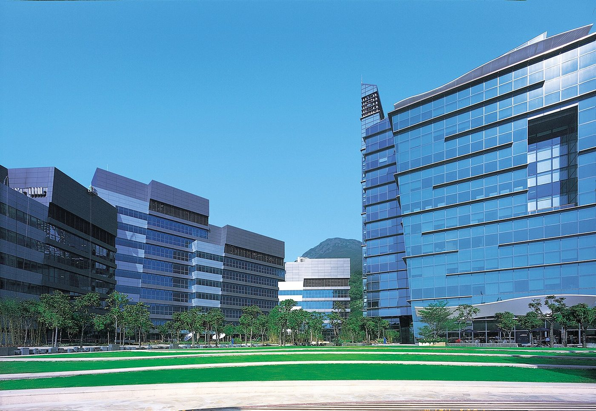
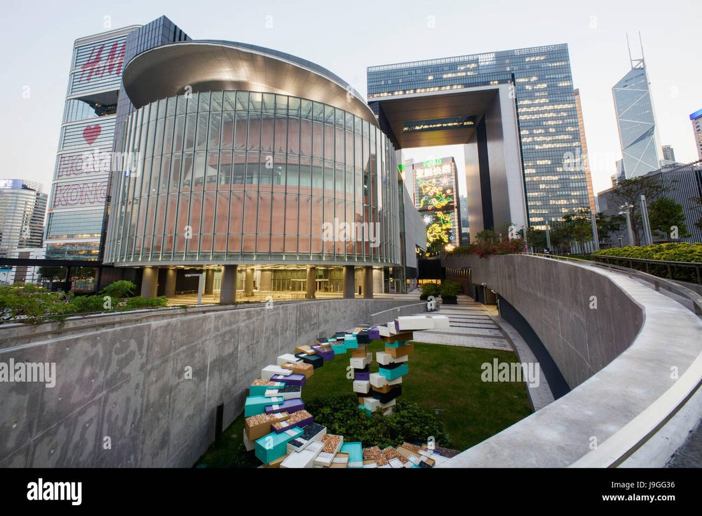
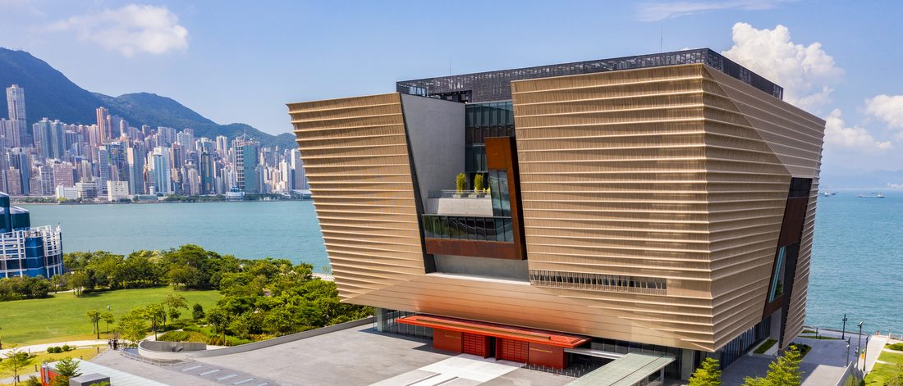
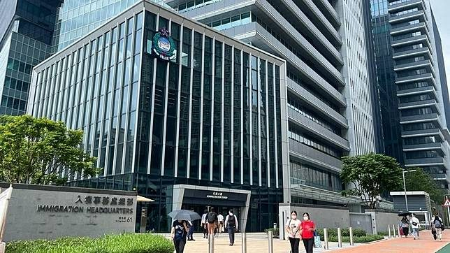

Pick 2 projects per sector — reply like: Gov: G1+G4 · DC: D1+D2 · Fin: F1+F5 ….
The first pick becomes the sector's featured story (big card with this photo); the second becomes the runner-up card. Everything else stays as compact references.
Government & Public Sector 政府

G1 Cyberport CP5 Expansion

G2 OGCIO Data Centre (photo indicative)G3 HK Three-Runway System

G4 West Kowloon / Palace Museum

G5 Immigration HQ, Tseung Kwan O
Data Centers 數據中心
D1 NVIDIA Data Center, TaiwanD2 HKEX — Tseung Kwan OD3 HK Jockey Club, Sha Tin